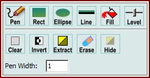
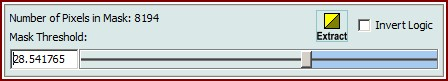

|
图像查看器绘图工具
|
您可以使用图像查看器环形菜单打开这些功能。

鼠标绘制模式
画笔：
绘制自定义线条或标记单个像素。
矩形：
绘制填充矩形。绘制时按住 Control 键可绘制正方形。
椭圆：
绘制填充椭圆。绘制时按住 Control 键可绘制圆形。
线条：
点击绘制水平线。绘制时按住 Control 键可绘制垂直线。
填充：
填充一个区域。
阈值：
打开一个滑块窗口，您可以在其中定义掩模绘制的阈值：

更改阈值将在高于或等于阈值的像素上设置整个图像掩模，并在低于或等于阈值的像素上清除掩模。
您也可以反转掩模逻辑，以便设置低于阈值的掩模像素。
您也可以使用所有工具通过按住 Shift 键并拖动鼠标来移除之前绘制区域或线条的某些部分。
掩模工具
清除：
清除当前掩模。
反转：
反转当前掩模。
提取：
将当前掩模提取为新的图像对象到当前项目。
擦除：
打开或关闭擦除模式。开启后，所有绘图工具在绘制时将擦除掩模。
隐藏：
隐藏已绘制的掩模（例如，为了更好地快速查看原始图像特征）。
画笔宽度：
更改画笔绘制工具的画笔宽度。